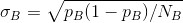
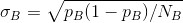
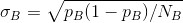
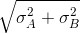

。同样，nB
/NB
是近似服从正态分布的随机变量，均值为 pB
，标准差为  ：
。同样，nB
/NB
是近似服从正态分布的随机变量，均值为 pB
，标准差为  ：7.5 案例：运行A/B测试
你在 DataSciencester 的主要职责之一是经验值优化，这是个委婉的说法，其实就是设法让人点击广告。你的一个广告商针对数据科学家开发了一种新的能量饮料，广告部门的副总希望你帮助他在广告 A（“口味好”）和广告 B（“营养均衡”）之间进行选择。
作为一名科学家 ，你得做一次实验 ，对网站访问者随机放送不同的广告，并记录每个广告的点击数。
如果 1000 个看到广告 A 的人中有 990 个人点击广告，而 1000 个看到广告 B 的人中只有 10 个点击，你可以确认 A 是更棒的广告。但倘若区别并不如此分明，可以使用统计推断进行选择。
假设有 NA
个人看到广告 A，其中 nA
个人点击广告。每次广告浏览都是一次伯努利试验，其中 pA
是点击广告 A 的概率。然后（如果 NA
足够大。此处就足够大）我们知道 nA
/NA
是近似服从正态分布的随机变量，其中均值为 pA
，标准差为 。同样，nB
/NB
是近似服从正态分布的随机变量，均值为 pB
，标准差为  ：
def estimated_parameters(N, n):
p = n / N
sigma = math.sqrt(p * (1 - p) / N)
return p, sigma
如果我们假设这两个正态分布互相独立（这个假设是合理的，因为每个伯努利试验也是独立的），那么它们的差也是正态分布的，其中均值为 pB - pA ，标准差为 。
这某种程度上有些欺骗性。只有在标准差已知的条件下数学推理才正确。我们从数据中估计参数，这意味着我们实际中应该用 t 分布。但如果数据集足够大，正态分布和 t 分布之间的差别可以忽略不计。
这意味着我们可以检验 pA 和 pB 相等（即 pA -pB 等于零）这个原假设 ，具体方式如下：
def a_b_test_statistic(N_A, n_A, N_B, n_B):
p_A, sigma_A = estimated_parameters(N_A, n_A)
p_B, sigma_B = estimated_parameters(N_B, n_B)
return (p_B - p_A) / math.sqrt(sigma_A ** 2 + sigma_B ** 2)
这应该近似一个标准正态分布。
比如，如果“口味好”的广告从 1000 次浏览中获得 200 次点击量，而“营养均衡”广告则从 1000 次浏览中获得 180 次点击量，则统计量等于：
z = a_b_test_statistic(1000, 200, 1000, 180) # -1.14
如果两个均值实际上相等，那么看到如此大的差异的概率为：
two_sided_p_value(z) # 0.254
这计算出的数值很大，以至于你不可以得出有差距的结论。另一方面，如果“营养均衡”仅仅获得 150 次点击量，则：
z = a_b_test_statistic(1000, 200, 1000, 150) # -2.94
two_sided_p_value(z) # 0.003
这意味着如果广告的效果相同，那么你看到有明显差异的概率只有 0.003。